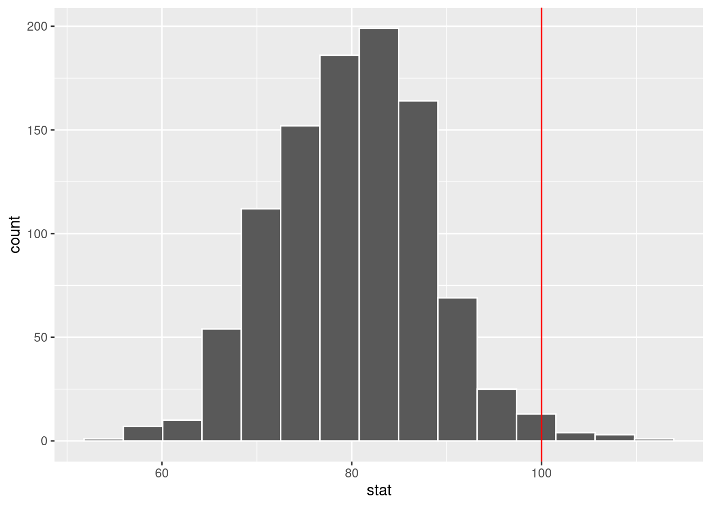

library(tidyverse)
library(openintro)Mathematical models for proportions
Warm up
Announcements
- No classes on Wednesday
- Lab 8 due Thursday
- Lab 9 optional
- Friday we will talk about final report formatting
Packages and data
Single proportion hypothesis testing
According to Duke Facts, 16% of Duke students are North Carolina residents. Suppose we take a random sample of 500 Duke students and find that 100 are NC residents. Can we conclude that the proportion is greater than 16%?
How would you perform a hypothesis test to test whether the true proportion of Duke students that are NC residents is truly smaller than 16%?
Exercise 1
What are the hypotheses?
\(H_0\): True proportion of NC residents among Duke students is 0.16
\(H_A\): True proportion of NC residents among Duke students is greater than 0.16.
No dataset
We have explored how to use a data set to simulate sampling distribution under null and perform randomization test.
set.seed(1234)
null_dist <- duke_nc |>
specify(response = resident, success = "NC") |>
hypothesise(null = "point", p = 0.16) |>
generate(reps = 1000, type = "draw") |>
calculate(stat = "prop")
null_dist |>
get_p_value(obs_stat, direction = "greater")
visualize(null_dist) +
shade_p_value(obs_stat, direction = "greater")We don’t have a data set to run this code!
Exercise 2
What is the observed statistic?
obs_stat <- 100/500Null distribution
We want to simulate null distribution, i.e., we want to randomly sample 500 observations (students) from a population (all Duke students) where the probability of being a NC resident is 0.16.
The binomial distribution is a special discrete distribution where there are two distinct complementary outcomes, a “success” and a “failure” (“NC” and “not NC” in our example). Binomial distributions takes in two parameters: \(n\) - number of trials/sample size, and \(p\) - probability of success. The \(n\) trials/observations are independent. That is, the outcome of any trial does not affect the outcome of the others. Think of it as flipping a coin that has probability \(p\) of landing on heads \(n\) times and recording the number of heads observed.
In our example, what is \(n\) and what is \(p\)?
n = 500, p = 0.16
Simulate null distribution
We will draw samples of size 500 each observation having a 0.16 probability of being from NC and will record the proportion that came from NC. We will do this 1000 times.
set.seed(1234)
nc_count <- tibble(stat = rbinom(n = 1000, size = 500, p = 0.16))
null_dist_nc = tibble(stat = nc_count$stat/500)
#show first 5 results
nc_count[1:5,]# A tibble: 5 × 1
stat
<int>
1 74
2 73
3 77
4 74
5 76null_dist_nc[1:5,]# A tibble: 5 × 1
stat
<dbl>
1 0.148
2 0.146
3 0.154
4 0.148
5 0.152We can visualize null distribution:
ggplot(null_dist_nc, aes(x = stat)) +
geom_histogram(bins = 15, color = "white") +
geom_vline(xintercept = obs_stat, color = "red" )Calculate p-value
How do we calculate p-value?
# option 1
sum(null_dist_nc >= obs_stat)/1000[1] 0.014# option 2
null_dist_nc |>
filter(stat >= obs_stat) |>
nrow()/1000[1] 0.014The p-value of 0.014 is smaller than 0.05, so we reject the null in favor of the alternative.
Exercise 3
Use the simulated data to perform randomization test using count instead of proportion. Define your new hypotheses, observed statistic, visualize null distribution, and calculate the p-value.
\(H_0\): If I were to collect a sample of 500 Duke students, I expect, on average, 80 of them to be NC residents.
\(H_A\): If I were to collect a sample of 500 Duke students, I expect, on average, more than 80 of them to be NC residents.
Observed statistic : 100
ggplot(nc_count, aes(x = stat)) +
geom_histogram(bins = 15, color = "white") +
geom_vline(xintercept = 100, color = "red" )
sum(nc_count >= 100)/1000[1] 0.014Why are we using proportion and not count for null distribution?
Mathematical models
In CLT lecture, we introduced the normal distribution and showed how it can be used as a mathematical model to describe the variability of a statistic.There are conditions under which a sample proportion \(\hat p\) is well modeled with a normal distribution.
Important
The sampling distribution for \(\hat p\) (the sample proportion) based on a sample of size \(n\) from a population with true proportion \(p\) is nearly normal when:
- The sample’s observations are independent, e.g., are from a simple random sample.
- We expected to see at least 10 successes and 10 failures in the sample, i.e., \(np \geq 10\) and \(n(1-p)\geq 10\). This is called the success-failure condition.
When these conditions are met, them the sampling distribution of \(\hat p\) is nearly normal with mean \(p\) and standard error of \(\hat p\) as \(SE = \sqrt{\frac{p(1-p)}{n}}\).
Typically we do not know the true proportion \(p\) so we substitute some value to check conditions and estimate the standard error. For confidence intervals, the sample proportion \(\hat p\) is used to check the success-failure condition and compute the standard error. For hypothesis tests, typically the null value – that is, the proportion claimed in the null hypothesis – is used in place of \(p\).
Exercise 4
Is the success-failure condition satisfied in our example of Duke students from NC?
For hypothesis test:
\(np = 500\times 0.16 = 80 \geq 10\)
\(n(1-p) = 500\times (1-0.16) = 500 - 80 = 420 \geq 10\)
For CI:
\(n\hat p = 500 \times 0.2 = 100 \geq 10\)
\(n(1-\hat p) = 500\times(1-0.2) = 500 - 100 = 400 \geq 10\).
Yes, it’s satisfied,
So we have \(\hat p \sim N(0.16, \sqrt{\frac{0.16(1-0.16)}{500}})\) under null and \(\hat p \overset{approx}{\sim} N(0.2. \sqrt{\frac{0.2\times 0.8}{500}})\).
Confidence interval for a proportion
When \(\hat p\) can be modeled using a normal distribution, the confidence interval for \(p\) takes the form \(\hat p \pm z^* \times SE\). The distance given by \(z^* \times SE\) is called the margin of error. Since \(p\) is unknown, we use \(\hat p\) to approximate the standard error: \(SE \approx \sqrt{\frac{\hat p(1-\hat p)}{n}}\).
\(z^*\)
The value \(z^*\) determines the confidence level. In particular, if you are interested in \((1-\alpha)\times 100\)% confidence interval, \(z^*\) describes how many standard deviations away the bounds of \((1-\alpha)\times 100\)% on standard normal (mean 0 and standard deviation 1) are. For example, common value of \(z^*\) is 1.96 (often approximated to be 2) indicating that the margin of error describes the variability associated with 95% of the sampled statistics.
The value of \(z^*\) can be found using qnorm() function in R.
# 99.7% CI
qnorm(0.0015)[1] -2.967738# 95% CI
qnorm(0.025)[1] -1.959964# 68% CI:
qnorm(0.16)[1] -0.9944579How do these relate to 68-95-99.7 rule?
Exercise 5
Construct a 95% confidence interval for \(p\), the proportion of Duke students who are residents of North Carolina.
phat = 0.2
SE = sqrt(0.2*0.8/500)
c(phat - 1.96 *SE, phat + 1.96*SE)[1] 0.1649385 0.2350615# using 2 as approximation of 1.96
c(phat - 2 * SE, phat + 2 * SE)[1] 0.1642229 0.2357771Hypothesis test for proportion
Suppose we have \(H_0: p = p_0\) vs \(H_A: p\neq p_0\) where \(p_0\) is the null value we are testing (0.16 in our example).
To apply the normal distribution framework in the context of a hypothesis test for a proportion, the independence and success-failure conditions must be satisfied. In a hypothesis test, the success-failure condition is checked using the null proportion: we verify \(np_0\) and \(n(1-p_0)\) are at least 10, where \(p_0\) is the null value.
Once conditions for using normal distribution for sample proportion under \(H_0\) are verified, we calculate standard error using \(p_0\). Thus, we assume, under null, sample proportions is distributed normally with mean \(p_0\) and standard error \(\sqrt{\frac{p_0(1-p_0)}{n}}\) (if \(H_0\) is true, this is just CLT).
Exercise 6
Perform the hypothesis test testing whether the true proportion of Duke students that are NC residents is truly smaller than 16%?
null_mean = 0.16
null_se = sqrt(0.16*(1-0.16)/500)
# pnorm calculates area to the left
# 1 - pnorm gives area to the right
1 - pnorm(q = obs_stat, mean = null_mean, sd = null_se )With the p-value of 0.007<0.05, we reject the null.